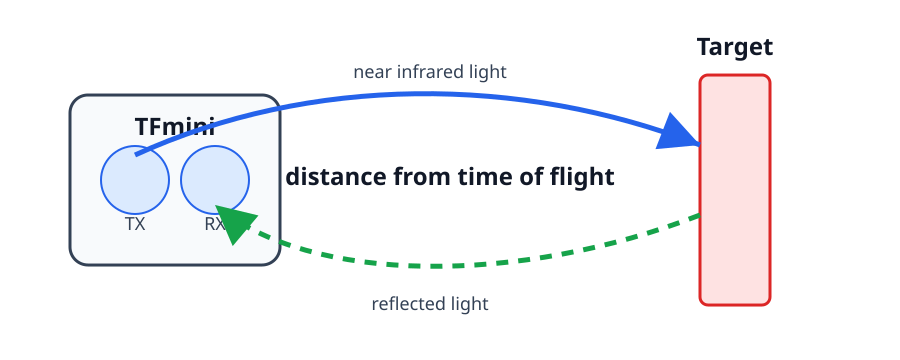
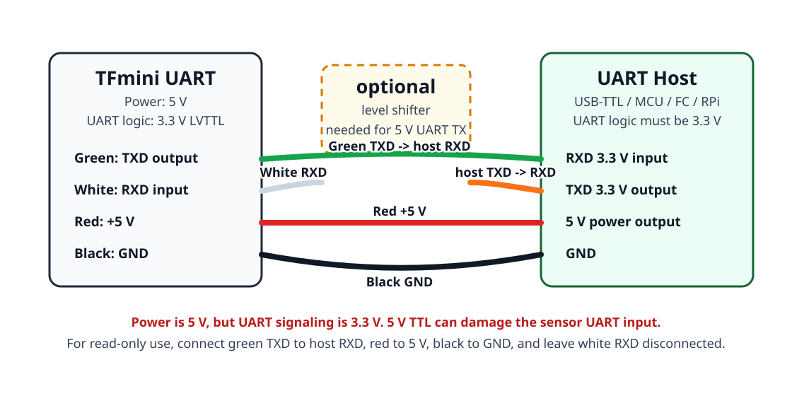

TFmini 12m UART LiDAR
What It Is
TFmini 12m UART is a small single-point LiDAR distance sensor. It measures one distance in front of the sensor, not a 2D scan.

Image source: Benewake TFmini-S product page

How it works:
- The sensor sends near infrared light toward the target.
- The light reflects back to the receiver.
- The sensor estimates distance from the light time-of-flight / phase difference.
- It outputs distance frames over
UART.
The default output is a binary frame at 115200 baud, usually 100 Hz.
Main Specification
| Parameter | Typical value |
|---|---|
| Range | 0.3-12 m indoor / weak ambient light |
| Blind zone | 0-0.3 m, data is unreliable |
| Accuracy | about +/-6 cm from 0.3-6 m, about +/-1% from 6-12 m |
| Resolution | 1 cm |
| Default frame rate | 100 Hz |
| Supply voltage | 5 V |
| Average current | up to about 140 mA |
| Peak current | up to about 800 mA |
| Interface | UART |
| UART default | 115200, 8N1 |
| UART logic level | 3.3 V LVTTL |
Warning
The sensor power is 5 V, but the UART logic is 3.3 V. Do not drive the TFmini RXD pin from a 5 V TTL UART without a logic level shifter.
Benewake TFmini Family
Benewake has several small single-point LiDAR modules with similar names. The table below is a practical comparison for choosing a module.
| Model | Range | Interface | Protection | Power | Suitable outside? | Notes |
|---|---|---|---|---|---|---|
TFmini, older UART 12 m module |
about 0.3-12 m |
UART |
no sealed enclosure | 5 V |
Limited | Good for indoor tests or protected mounting. Not a weatherproof outdoor sensor. |
TF-Luna |
0.2-8 m |
UART, I2C, I/O |
without enclosure | <=0.35 W |
Limited | Small and low power, but should be protected from water and dust. |
TFmini-S |
0.1-12 m |
UART, I2C, I/O |
IP65 |
<=0.7 W |
Yes | Better option than old TFmini for outdoor or dusty use. |
TFmini Plus |
0.1-12 m |
UART, I2C, I/O |
IP65 |
about 550 mW |
Yes | Robust 12 m option with sealed enclosure. |
TFmini-i |
0.1-12 m |
CAN, RS-485 |
IP65 |
<=0.8 W @ 12 V |
Yes | Industrial version. Good for noisy wiring, but not a UART module. |
TFS20-L |
0.2-20 m |
UART, I2C |
without enclosure | <=0.35 W |
Limited | Longer range bare module. Use enclosure if mounted outside. |
For outdoor use, prefer IP65 or better. A bare module can still measure outside in some conditions, but it is not protected from water, dust, or mechanical exposure.
Wiring
For the common original TFmini UART cable:
| TFmini wire color | TFmini pin | Connect to host |
|---|---|---|
| Green | TXD, 3.3 V UART output |
Host RX |
| White | RXD, 3.3 V UART input |
Host TX through 3.3 V logic |
| Red | +5V power |
5 V supply |
| Black | GND |
GND |

Notes:
TXandRXare crossed: sensorTXDgoes to hostRX.- Connect grounds together.
- A USB-to-TTL adapter should use
3.3 V logicfor UART. - The sensor still needs
5 Vpower. Do not power it from3.3 V. - If your adapter or microcontroller UART is
5 V, use a level shifter at least on hostTXD -> TFmini RXD. - If you only read distance and do not send commands, connect only
TXD,5 V, andGND; leave TFminiRXDdisconnected.
Python Read Example
Install dependency:
Example:
For Raspberry Pi UART, the port may be /dev/serial0. For a USB-TTL adapter, it is commonly /dev/ttyUSB0 or /dev/ttyACM0.
Quick Check
If no data appears:
- Check that the sensor has
5 Vpower and common ground. - Swap host
RXandTXif the UART wiring may be reversed. - Confirm the serial port name.
- Confirm baud rate is
115200. - Check that the host UART logic is
3.3 V. - Point the sensor at a target farther than
30 cm.